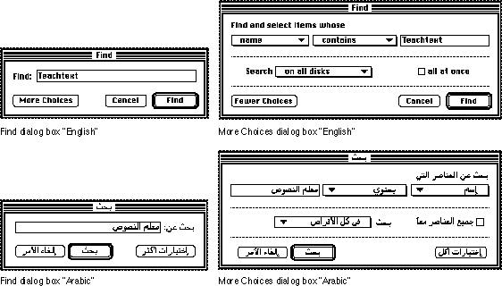
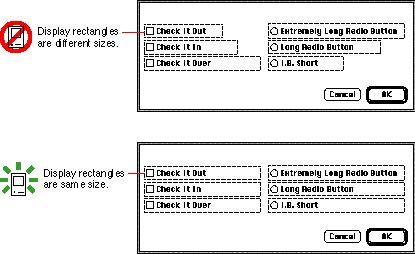
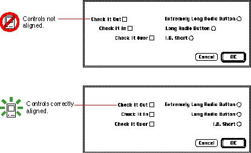

|
Default Alignment of Interface ElementsWhen dialog boxes are localized, the text in the dialog box may become longer or shorter. Also, the alignment of controls in the dialog box mayvary with localization. For example, Arabic and Hebrew are written from right to left, so the alignment of items in an Arabic or a Hebrew dialog box is generally right to left, just as dialog box items in English or Russian are generally left to right. Figure 2-2 shows examples of English and Arabic dialog boxes. Figure 2-2 English and Arabic dialog boxes  When the alignment of items is reversed, it's important
that the elements appear vertically aligned. Therefore,
when you create dialog box items, Figure 2-3 Dialog boxes with display rectangles that are different sizes and the same size  Figure 2-4 shows the same
dialog boxes with the alignment of their elements reversed,
as they would appear in a right-to-left script system. This
figure shows that when the controls are reversed, they
don't align properly, which Figure 2-4 Right-to-left alignment of dialog box items  Another common problem occurs when dialog box items are longer than the boundaries of the dialog box. In this case, when the text direction is reversed, the text appears outside of the dialog box and isn't visible on the screen. Be sure to make your dialog box items shorter than the width of the dialog box. |